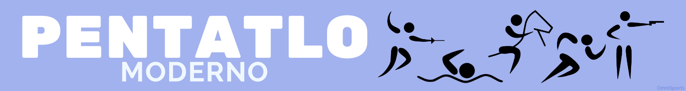
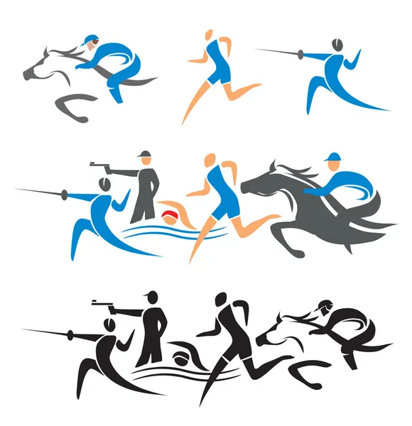

Pentatlo Moderno, o que é?
Pentatlo moderno é um desporto olímpico praticado por homens e por mulheres, individualmente ou em equipes. Compõe-se de cinco modalidades diferentes: hipismo, esgrima, natação, tiro esportivo e corrida. É proclamado vencedor aquele que obtiver o melhor desempenho geral ao somar mais pontos. Por essa variedade de esportes, o vencedor do pentatlo é considerado o atleta mais completo
Origem do pentatlo
O esporte surgiu na Grécia Antiga em 708 a.C. Era a modalidade mais nobre dos Jogos Olímpicos da Antiguidade, que premiava o atleta mais completo. Naquela época, as provas iniciais eram corrida, salto em distância, arremesso de disco e salto em altura. Então, os dois melhores colocados se enfrentavam em uma luta, e o vencedor ganhava não apenas o título, mas, também, prestígio na sociedade, passando a ser aclamado quase como um semideus. Aclamado pelo público, era chamado de "Victor Ludorum" ou "O Vencedor dos Jogos".
Como ficou
A transformação do esporte para o que hoje conhecemos como pentatlo moderno aconteceu no fim do século 19, graças a um oficial sueco. Ele teve a ideia de adaptar o esporte para uma simulação militar. A intenção era criar a situação de um soldado que tinha que entregar mensagens atrás das linhas inimigas. A “aventura” começava a cavalo, passava pelo tiro, pela esgrima e pela natação, terminando na corrida.
Pentatlo Moderno no Brasil
O pentatlo moderno é disputado no Brasil desde 1922. Filiada à Confederação Brasileira de Desportos Terrestres, a modalidade teve a participação de brasileiros em cinco edições de Olimpíadas: Berlim-1936, Helsinque-1952, Melbourne-1956, Roma-1960 e Tóquio-1964. Durante muitos anos, a atividade ficou restrita ao âmbito das forças armadas.
Foi apenas em 2001 que o esporte ganhou sua própria entidade com a fundação da Confederação Brasileira de Pentatlo Moderno (CBPM). Atualmente, apenas cinco federações estão filiadas: Federação Gaúcha de Pentatlo Moderno (FGPM), Federação de Pentatlo Moderno do Estado do Rio de Janeiro (FPMERJ), Federação de Pentatlo Moderno do Distrito Federal (FPMDF), Federação Pernambucana de Pentatlo Moderno (FPEPM) e Federação Paulista de Pentatlo Moderno (FPPM).

Curiosidades
Os países com mais medalhas olímpicas no pentatlo moderno são Hungria (9 de ouro, 8 de prata e 5 de bronze) e Suécia (9 de ouro, 7 de prata e 5 de bronze
acredita-se que as raízes sejam de 708 a.C. Isso porque a criação se deu pelos espartanos, que tinham o intuito de formar guerreiros completos para os seus exércitos
Atualmente, os países mais representativos desse esporte olímpico são: Hungria, Suécia e Rússia.

Ordem das modalidades
Os esportes praticados e sua ordem de execução dispõem-se da seguinte forma:
1ª etapa Esgrima:
Todos os atletas se enfrentam em disputas com duração de um minuto cada. Com a espada é necessário encostá-la no adversário em qualquer região do corpo para somar pontos, que só serão perdidos na hipótese de o competidor sair da pista, virar as costas para o oponente ou uma jogada perigosa. Caso o pentatleta triunfe em 70% dos embates computa-se 1000 pontos.
2ª etapa Natação:
Uma prova onde o que conta é o tempo. O atleta nada 200 metros livre o mais rápido possível. As faltas nestas disputas, com perda de 10 pontos, são de escapar na saída da prova, também de não tocar a parede da piscina no momento da virada e ao contrário deste é tocar no fundo da piscina.
3ª etapa Hipismo:
O trajeto percorrido é de 350 a 450 metros com 12 obstáculos. Os tempos para execução são de 1min e 1min17s. A escolha dos cavalos ocorre através de sorteios, que acontece pela ordem de classificação das duas outras provas. encerra-se a prova na segunda queda do competidor.
4ª e 5ª etapas Corrida e Tiro a laser (Evento combinado):
São quatro ciclos intercalando corrida e tiro. Um percurso de 3200 metros onde a cada 800 metros para-se para os disparos. Deve-se acertar cinco vezes o alvo que fica posicionado a 10 metros de distância segurando a arma com apenas uma das mãos. O pentatleta possui o tempo máximo de 50 segundos para acertar. A ordem de largada é definida conforme o resultado das provas anteriores, os pontos de diferença entre os competidores, determina os segundos entre eles.